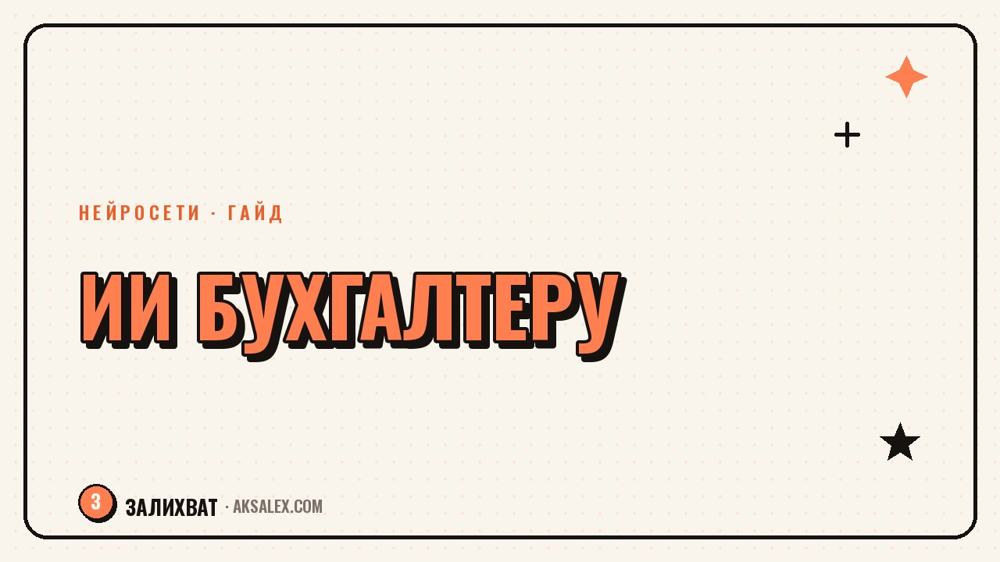

Нейросети для бухгалтера: обзор инструментов

Работа бухгалтера состоит из повторяющихся операций: разнести первичку, свести данные, написать пояснение в налоговую, ответить контрагенту про акт сверки. Нейросети не заменят проводки и не возьмут на себя ответственность за отчёт, но заметно ускоряют черновую часть - если понимать, где им можно доверять, а где нет.
Что нейросеть может в бухгалтерии, а что нет
Языковые модели хорошо работают с текстом: распознают документ, структурируют данные, пишут письмо по шаблону. С цифрами у них хуже - модель может уверенно ошибиться в расчёте, и эта ошибка не будет выглядеть как ошибка. Поэтому итоговые суммы в отчётности всегда нужно проверять в бухгалтерской программе, а не доверять напрямую тексту от чат-модели.
Реалистичные задачи для ИИ
- Распознавание и структурирование данных со сканов первички
- Черновик пояснения в налоговую или письма контрагенту
- Сверка текстовых формулировок в договоре на предмет рисков
- Ответы на типовые вопросы сотрудников по учёту расходов
Разбор первичных документов
Самая заметная экономия времени - распознавание сканов и фото документов. Сервисы с OCR и языковой моделью вытаскивают из накладной или акта дату, сумму, контрагента и номер, и сразу раскладывают по нужным полям. Это быстрее, чем вбивать вручную, особенно если документов приходит десятками в день.
Важный момент - после распознавания нужна выборочная сверка, а не слепое доверие. Модель может перепутать похожие цифры на некачественном скане или сдвинуть десятичную запятую. Разумная практика - сверять каждый двадцатый-тридцатый документ вручную и следить, не растёт ли доля ошибок.
Нейросеть в бухгалтерии - это не второй бухгалтер, а быстрый помощник, который готовит черновик. Подпись под отчётом всё равно ставит человек, и ответственность с него никто не снимает.
Черновики писем и пояснений
Второе частое применение - переписка. Пояснение в налоговую по требованию, письмо контрагенту про акт сверки, ответ на вопрос директора про расходы - всё это шаблонные по структуре тексты, где меняются детали. Чат-модель, если дать ей суть ситуации и нужные цифры, за минуту собирает черновик в деловом тоне.
Как правильно попросить
- Укажи тип документа и получателя (налоговая, контрагент, руководитель)
- Дай точные цифры и даты - модель не должна их придумывать сама
- Попроси нейтральный деловой тон без лишних оборотов
- Проверь готовый текст на соответствие реальным фактам перед отправкой
Сравнение инструментов
Инструменты для бухгалтерии делятся на универсальные чат-модели и специализированные сервисы, встроенные в учётные системы. Первые дешевле и гибче, вторые точнее работают с распознаванием документов, потому что заточены под конкретные формы.
| Инструмент | Для чего | Плюс | Минус |
|---|---|---|---|
| Универсальная чат-модель | Письма, пояснения, черновики ответов | Гибкость, низкая цена входа | Не проверяет цифры на достоверность |
| OCR-модуль в учётной программе | Распознавание сканов первички | Встроен в привычный интерфейс | Стоит дороже, привязан к системе |
| Специализированный сервис распознавания | Массовая загрузка пачек документов | Высокая скорость на больших объёмах | Нужна отдельная интеграция с учётом |
Риски: конфиденциальность и ответственность
Финансовые данные - чувствительная информация, и загружать в облачный сервис документы с реквизитами компании стоит только после проверки, как сервис хранит данные и использует ли их для дообучения моделей. Для части задач разумнее обезличивать данные перед отправкой: убрать точные суммы и названия, оставить только структуру вопроса.
Второй риск - переложить ответственность на инструмент. Ни один сервис не подпишет за бухгалтера декларацию и не ответит перед налоговой за ошибку в расчёте. Нейросеть ускоряет подготовку, но финальную проверку и решение всегда принимает человек.
С чего начать внедрение
Не стоит сразу подключать несколько сервисов и менять процессы целиком. Разумный путь - выбрать одну повторяющуюся задачу, например разбор сканов первички или черновики типовых писем, и опробовать её на реальном потоке документов месяц. Если экономия времени заметна и ошибок немного - расширять на другие задачи.
- Начни с одной задачи, а не с полной автоматизации сразу
- Заведи привычку выборочно проверять результат работы ИИ
- Не загружай в облачные сервисы данные без предварительной проверки политики хранения
- Фиксируй, сколько времени реально экономится, чтобы понять эффект
Частые вопросы
Может ли нейросеть полностью вести бухгалтерию за небольшую компанию?
Нет, она ускоряет отдельные операции - распознавание документов, черновики писем, но не заменяет проводки, отчётность и ответственность бухгалтера перед налоговой.
Насколько точно ИИ распознаёт сканы первичных документов?
Точность высокая на чётких сканах, но на плохом качестве или рукописных пометках возможны ошибки. Выборочная проверка распознанных данных обязательна.
Безопасно ли загружать финансовые документы в облачные нейросети?
Зависит от политики конкретного сервиса. Перед загрузкой стоит проверить условия хранения данных и по возможности обезличивать реквизиты в чувствительных документах.
С каких задач лучше начать внедрение ИИ в бухгалтерии?
С одной повторяющейся операции - например разбора сканов первички или черновиков типовых писем. Так проще оценить реальную экономию времени перед расширением на другие процессы.
Можно ли доверять нейросети расчёт сумм в отчётности?
Нет, расчёты и итоговые суммы всегда нужно проверять в бухгалтерской программе. Модель может уверенно ошибиться в цифрах, и такая ошибка не будет заметна на первый взгляд.
Раз тема оказалась полезной, вот что почитать следующим. Где нейросети реально экономят время продажнику: скрипты, воронки, разбор звонков - и где без человека не обойтись.
Читать статью →а не вручную